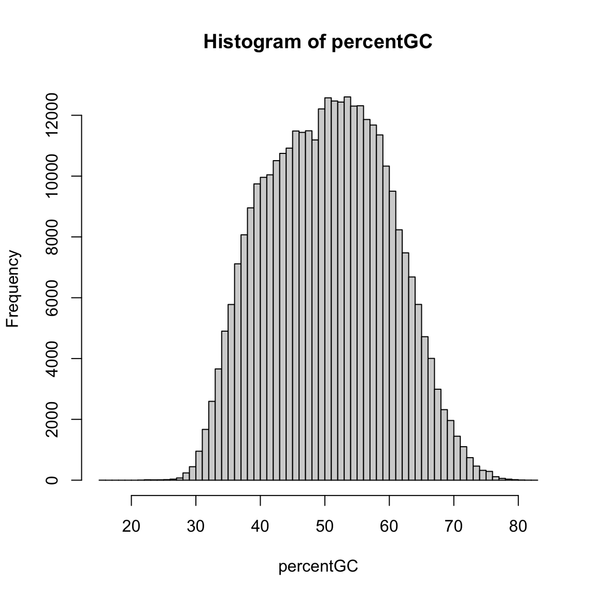

suppressPackageStartupMessages({
library(GenomicFeatures)
library(TxDb.Hsapiens.UCSC.hg38.knownGene)
})
txdb <- TxDb.Hsapiens.UCSC.hg38.knownGene
prom <- promoters(txdb, upstream = 1000, downstream = 1000)
#> Warning in valid.GenomicRanges.seqinfo(x, suggest.trim = TRUE): GRanges object contains 150 out-of-bound ranges located on sequences
#> chr1_GL383518v1_alt, chr2_GL383522v1_alt, chr4_GL000257v2_alt,
#> chr5_GL339449v2_alt, chr5_KI270795v1_alt, chr5_KI270898v1_alt,
#> chr6_GL000254v2_alt, chr6_GL000255v2_alt, chr6_KI270797v1_alt,
#> chr6_KI270798v1_alt, chr6_KI270801v1_alt, chr7_GL383534v2_alt,
#> chr7_KI270803v1_alt, chr7_KI270806v1_alt, chr7_KI270809v1_alt,
#> chr9_GL383540v1_alt, chr9_GL383541v1_alt, chr11_KI270902v1_alt,
#> chr12_GL383551v1_alt, chr12_GL383553v2_alt, chr12_KI270834v1_alt,
#> chr14_KI270847v1_alt, chr15_KI270848v1_alt, chr15_KI270850v1_alt,
#> chr15_KI270851v1_alt, chr15_KI270906v1_alt, chr16_GL383556v1_alt,
#> chr16_KI270854v1_alt, chr17_JH159146v1_alt, chr17_JH159147v1_alt,
#> chr17_KI270857v1_alt, chr17_KI270860v1_alt, chr19_GL383575v2_alt,
#> chr19_GL383576v1_alt, chr19_KI270866v1_alt, chr19_KI270868v1_alt,
#> chr19_KI270884v1_alt, chr19_KI270885v1_alt, chr19_KI270889v1_alt,
#> chr19_KI270890v1_alt, chr19_KI270891v1_alt, chr19_KI270915v1_alt,
#> chr19_KI270916v1_alt, chr19_KI270919v1_alt, chr19_KI270922v1_alt,
#> chr19_KI270923v1_alt, chr19_KI270929v1_alt, chr19_KI270930v1_alt,
#> chr19_KI270931v1_alt, chr19_KI270932v1_alt, chr19_KI270933v1_alt,
#> chr20_KI270869v1_alt, chr20_KI270871v1_alt, chr22_KI270876v1_alt,
#> chr22_KI270879v1_alt, chr16_KI270728v1_random, chr22_KI270731v1_random,
#> chrUn_KI270750v1, chr4_ML143349v1_fix, chr5_KV575244v1_fix,
#> chr7_KZ208912v1_fix, chr17_KV575245v1_fix, chr17_KV766196v1_fix,
#> chr17_MU273381v1_fix, chr19_MU273384v1_fix, chr20_MU273389v1_fix,
#> chrY_MU273398v1_fix, chr1_KQ458384v1_alt, chr17_KV766198v1_alt, and
#> chr19_KV575259v1_alt. Note that ranges located on a sequence whose length is
#> unknown (NA) or on a circular sequence are not considered out-of-bound (use
#> seqlengths() and isCircular() to get the lengths and circularity flags of the
#> underlying sequences). You can use trim() to trim these ranges. See
#> ?`trim,GenomicRanges-method` for more information.
prom
#> GRanges object with 412034 ranges and 2 metadata columns:
#> seqnames ranges strand | tx_id
#> <Rle> <IRanges> <Rle> | <integer>
#> ENST00000832824.1 chr1 10121-12120 + | 1
#> ENST00000832825.1 chr1 10125-12124 + | 2
#> ENST00000832826.1 chr1 10410-12409 + | 3
#> ENST00000832827.1 chr1 10411-12410 + | 4
#> ENST00000832828.1 chr1 10426-12425 + | 5
#> ... ... ... ... . ...
#> ENST00000710260.1 chrX_MU273397v1_alt 259096-261095 - | 412030
#> ENST00000710028.1 chrX_MU273397v1_alt 281687-283686 - | 412031
#> ENST00000710030.1 chrX_MU273397v1_alt 315303-317302 - | 412032
#> ENST00000710216.1 chrX_MU273397v1_alt 314237-316236 - | 412033
#> ENST00000710031.1 chrX_MU273397v1_alt 323924-325923 - | 412034
#> tx_name
#> <character>
#> ENST00000832824.1 ENST00000832824.1
#> ENST00000832825.1 ENST00000832825.1
#> ENST00000832826.1 ENST00000832826.1
#> ENST00000832827.1 ENST00000832827.1
#> ENST00000832828.1 ENST00000832828.1
#> ... ...
#> ENST00000710260.1 ENST00000710260.1
#> ENST00000710028.1 ENST00000710028.1
#> ENST00000710030.1 ENST00000710030.1
#> ENST00000710216.1 ENST00000710216.1
#> ENST00000710031.1 ENST00000710031.1
#> -------
#> seqinfo: 711 sequences (1 circular) from hg38 genomeHow to compute sequence composition for genomic regions
2025-06-17
Source:vignettes/how-to-compute-sequence-composition-for-genomic-regions.qmd
This HowTo shows how to fetch sequences for given regions from a reference and compute composition features for them.
Bioconductor packages used in this document
How to compute sequence composition for genomic regions
Mammalian genomes contain regulatory regions with a high content of CpG dinucleotides, so called CpG islands, a side effect indirectly caused by the methylation of cytosines in CpG contexts. Many transcripts contain a CpG island in their promoter region, near the start of the transcript. In this HowTo, we will identify such transcripts by analyzing the CpG composition of promoter sequences.
We first obtain the coordinates of promoter regions from the TxDb.Hsapiens.UCSC.hg38.knownGene package, using the promoters function from the GenomicFeatures package:
Here, promoter regions are defined as 2000 base pair regions centered on transcript start sites (the 5’-end of a transcript). The warning message above is caused by start sites that are near the boundary of a chromosome, such that the promoter region will extend beyond its beginning or end. By calling trim on the GRanges object, all regions are truncated to the limits of the chromosomes, resulting in a few promoters shorter than 2000 base pairs:
It may be useful to now subset the extracted promoters, for example to only retain promoters on autosomes, or only a single promoter per gene. Here, we will remove redundant promoters resulting from transcripts with identical start sites:
summary(duplicated(prom))
#> Mode FALSE TRUE
#> logical 342465 69569
prom <- prom[!duplicated(prom)]Next, we extract the sequences of the promoters from the reference genome assembly in the BSgenome.Hsapiens.UCSC.hg38 package:
suppressPackageStartupMessages({
library(Biostrings)
library(BSgenome.Hsapiens.UCSC.hg38)
})
promseq <- getSeq(BSgenome.Hsapiens.UCSC.hg38, prom)
promseq
#> DNAStringSet object of length 342465:
#> width seq names
#> [1] 2000 AACCCTAACCCTAACCCTAAC...TGGGATGGGCCATTGTTCAT ENST00000832824.1
#> [2] 2000 CTAACCCTAACCCTAACCCTA...ATGGGCCATTGTTCATCTTC ENST00000832825.1
#> [3] 2000 CCCTAACCCTAACCCTAACCC...GCCCTGGGAGAGCAGGTGGA ENST00000832826.1
#> [4] 2000 CCTAACCCTAACCCTAACCCT...CCCTGGGAGAGCAGGTGGAA ENST00000832827.1
#> [5] 2000 AACCCTAACCCTAACCCCTAA...TGGAAGATCAGGCAGGCCAT ENST00000832828.1
#> ... ... ...
#> [342461] 2000 TGGATCAACGAACTATCATTC...GTATGCACCAATATGTATAA ENST00000710258.1
#> [342462] 2000 ATCCACCAGCCTCGGCCTCCC...CAAGGAACTCGTCATCCCTT ENST00000710028.1
#> [342463] 2000 CAGACACTCCCCTTTTCAAAC...GTCGATGTGGCGGCGCTAGT ENST00000710030.1
#> [342464] 2000 GTTGGGGAAGGACAGAGCGAG...TCCCCTAGCCTTTATCGTTC ENST00000710216.1
#> [342465] 2000 GTCTGTATGATTCCGAGACAG...GGCCAAAGCCTGCGTAACCG ENST00000710031.1Finally, we calculate some sequence features: The percent of G and C bases, and the ratio of observed over expected CpG dinucleotides (where the expected frequency of a dinucleotide is the product of the frequencies of the two mononucleotides). We obtain the mono- and dinucleotide frequencies from the sequences using the oligonucleotideFrequency function from the Biostrings package:
mo <- oligonucleotideFrequency(promseq, width = 1, as.prob = TRUE)
di <- oligonucleotideFrequency(promseq, width = 2, as.prob = TRUE)
head(mo)
#> A C G T
#> [1,] 0.2040 0.3230 0.2755 0.1975
#> [2,] 0.2030 0.3230 0.2755 0.1985
#> [3,] 0.1850 0.2880 0.3195 0.2075
#> [4,] 0.1855 0.2875 0.3195 0.2075
#> [5,] 0.1855 0.2855 0.3220 0.2070
#> [6,] 0.1905 0.2640 0.3250 0.2205
head(di)
#> AA AC AG AT CA CC
#> [1,] 0.05602801 0.06153077 0.06103052 0.02551276 0.05752876 0.12056028
#> [2,] 0.05552776 0.06103052 0.06103052 0.02551276 0.05752876 0.11955978
#> [3,] 0.03751876 0.04352176 0.07353677 0.03001501 0.06453227 0.08104052
#> [4,] 0.03801901 0.04352176 0.07353677 0.03001501 0.06453227 0.08054027
#> [5,] 0.03701851 0.04252126 0.07503752 0.03101551 0.06603302 0.07853927
#> [6,] 0.03401701 0.04102051 0.08104052 0.03451726 0.07053527 0.07303652
#> CG CT GA GC GG GT
#> [1,] 0.06653327 0.07853927 0.04252126 0.1065533 0.08304152 0.04352176
#> [2,] 0.06653327 0.07903952 0.04252126 0.1065533 0.08304152 0.04352176
#> [3,] 0.07003502 0.07253627 0.05152576 0.1200600 0.09754877 0.05052526
#> [4,] 0.07003502 0.07253627 0.05152576 0.1200600 0.09754877 0.05052526
#> [5,] 0.07003502 0.07103552 0.05202601 0.1210605 0.09854927 0.05052526
#> [6,] 0.04952476 0.07103552 0.05752876 0.1040520 0.10455228 0.05902951
#> TA TC TG TT
#> [1,] 0.04752376 0.03451726 0.06503252 0.05002501
#> [2,] 0.04752376 0.03551776 0.06503252 0.05052526
#> [3,] 0.03151576 0.04302151 0.07853927 0.05452726
#> [4,] 0.03151576 0.04302151 0.07853927 0.05452726
#> [5,] 0.03001501 0.04352176 0.07853927 0.05452726
#> [6,] 0.02851426 0.04602301 0.08954477 0.05602801
percentGC <- 100 * (mo[, "C"] + mo[, "G"])
expectedCpG <- mo[, "C"] * mo[, "G"]
obsExpRatioCpG <- di[, "CG"] / expectedCpGFinally, we can look at the distribution of these sequence features. The percentage of G+C bases in promoters spans a broad range from about 30% to over 70%:
hist(percentGC, 60)
Defining CpG island promoters using this distribution would be hard, but is much easier using the observed over expected ratio of CpGs, which shows a much clearer bimodal structure:
Interestingly, almost all ratios are below 1.0, indicating that CpG islands are in fact not enriched for CpG dinucleotides, but rather lose them at a lower rate than other genomic regions.
Plotting the ratio versus the GC percentage furthermore reveals that CpG island promoters are also slightly GC-richer:
Further reading
More examples of how to represent and work with biological sequences are contained in the vignettes of the Biostrings package, available for example from vignette(package = "Biostrings").
If no BSgenome object is available for your genome of interest, you can also use alternative sources to extract your sequences from, such as DNAStringSet objects or files in fasta or 2bit format. A list of inputs supported by the getSeq function can be obtained using:
showMethods(getSeq)
#> Function: getSeq (package Biostrings)
#> x="BSgenome"
#> x="FaFile"
#> x="FaFileList"
#> x="TwoBitFile"
#> x="XStringSet"For more information about CpG islands, see:
- Bird A, Taggart M, Frommer M, Miller OJ, Macleod D. A fraction of the mouse genome that is derived from islands of nonmethylated, CpG-rich DNA. Cell. 1985 Jan;40(1):91-9. doi: 10.1016/0092-8674(85)90312-5. PMID: 2981636.
- Gardiner-Garden M, Frommer M. CpG islands in vertebrate genomes. J Mol Biol. 1987 Jul 20;196(2):261-82. doi: 10.1016/0022-2836(87)90689-9. PMID: 3656447.
Session info
Click to display session info
sessionInfo()
#> R version 4.5.1 (2025-06-13)
#> Platform: x86_64-apple-darwin20
#> Running under: macOS Ventura 13.7.6
#>
#> Matrix products: default
#> BLAS: /Library/Frameworks/R.framework/Versions/4.5-x86_64/Resources/lib/libRblas.0.dylib
#> LAPACK: /Library/Frameworks/R.framework/Versions/4.5-x86_64/Resources/lib/libRlapack.dylib; LAPACK version 3.12.1
#>
#> locale:
#> [1] en_US.UTF-8/en_US.UTF-8/en_US.UTF-8/C/en_US.UTF-8/en_US.UTF-8
#>
#> time zone: UTC
#> tzcode source: internal
#>
#> attached base packages:
#> [1] stats4 stats graphics grDevices utils datasets methods
#> [8] base
#>
#> other attached packages:
#> [1] BSgenome.Hsapiens.UCSC.hg38_1.4.5
#> [2] BSgenome_1.77.0
#> [3] rtracklayer_1.69.0
#> [4] BiocIO_1.19.0
#> [5] Biostrings_2.77.1
#> [6] XVector_0.49.0
#> [7] TxDb.Hsapiens.UCSC.hg38.knownGene_3.21.0
#> [8] GenomicFeatures_1.61.3
#> [9] AnnotationDbi_1.71.0
#> [10] Biobase_2.69.0
#> [11] GenomicRanges_1.61.0
#> [12] GenomeInfoDb_1.45.4
#> [13] IRanges_2.43.0
#> [14] S4Vectors_0.47.0
#> [15] BiocGenerics_0.55.0
#> [16] generics_0.1.4
#> [17] BiocStyle_2.37.0
#>
#> loaded via a namespace (and not attached):
#> [1] SparseArray_1.9.0 bitops_1.0-9
#> [3] lattice_0.22-7 RSQLite_2.4.1
#> [5] digest_0.6.37 grid_4.5.1
#> [7] evaluate_1.0.3 fastmap_1.2.0
#> [9] blob_1.2.4 Matrix_1.7-3
#> [11] jsonlite_2.0.0 restfulr_0.0.15
#> [13] DBI_1.2.3 BiocManager_1.30.25
#> [15] httr_1.4.7 UCSC.utils_1.5.0
#> [17] XML_3.99-0.18 codetools_0.2-20
#> [19] abind_1.4-8 cli_3.6.5
#> [21] rlang_1.1.6 crayon_1.5.3
#> [23] bit64_4.6.0-1 DelayedArray_0.35.1
#> [25] cachem_1.1.0 yaml_2.3.10
#> [27] S4Arrays_1.9.1 tools_4.5.1
#> [29] parallel_4.5.1 BiocParallel_1.43.3
#> [31] memoise_2.0.1 Rsamtools_2.25.0
#> [33] SummarizedExperiment_1.39.0 curl_6.3.0
#> [35] vctrs_0.6.5 R6_2.6.1
#> [37] png_0.1-8 matrixStats_1.5.0
#> [39] KEGGREST_1.49.0 bit_4.6.0
#> [41] pkgconfig_2.0.3 xfun_0.52
#> [43] GenomicAlignments_1.45.0 MatrixGenerics_1.21.0
#> [45] knitr_1.50 rjson_0.2.23
#> [47] htmltools_0.5.8.1 rmarkdown_2.29
#> [49] compiler_4.5.1 RCurl_1.98-1.17